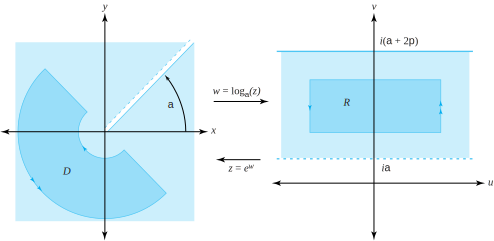
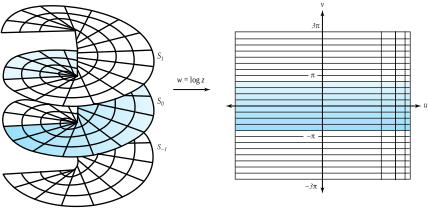

In Section 5.1, we showed that, if \(w\) is a nonzero complex number, then the equation \(w=\exp z\) has infinitely many solutions. Because the function \(\exp(z)\) is a many-to-one function, its inverse (the logarithm) is necessarily multivalued.
Definition5.2.1.Multivalued logarithm.
For \(z \ne 0\text{,}\) we define the multivalued function \(\log\) as the inverse of the exponential function; that is,
If we go through the same steps as we did in Equations (5.1.8) and (5.1.9), we find that, for any complex number \(z \ne 0\text{,}\) the solutions \(w\) to Equation (5.2.1) take the form
\begin{equation}
w=\ln |z| +i\theta, \text{ for } z \ne 0\text{.}\tag{5.2.2}
\end{equation}
where \(\theta \in \arg(z)\) and \(\ln|z|\) denotes the natural logarithm of the positive number \(|z|\text{.}\) Because \(\arg(z)\) is the set \(\mathrm{arg}(z)=\{\mathrm{Arg}(z) +2n\pi :n \text{ is an integer } \}\text{,}\) we can express the set of values comprising \(\log (z)\) as
where it is understood that Identity (5.2.4) refers to the same set of numbers per Identity (5.2.3).
Recall that \(\mathrm{Arg}\) is defined so that for \(z \ne 0\text{,}\)\(-\pi \lt \mathrm{ Arg}(z) \le \pi\text{.}\) We call any one of the values given in Identities (5.2.3) or (5.2.4) a logarithm of \(z\text{.}\) Note that the different values of \(\log(z)\) all have the same real part and that their imaginary parts differ by the amount \(2n\pi\text{,}\) where \(n\) is an integer. When \(n=0\text{,}\) we have a special situation.
Definition5.2.2.Principal value of the logarithm.
For \(z \ne 0\text{,}\) we define Log, the principal value of the logarithm, by
The domain for the function \(\mathrm{Log}\) is the set of all nonzero complex numbers in the \(z\) plane, and its range is the horizontal strip \(\{ w:-\pi \lt \mathrm{Im}(w) \le \pi \}\) in the \(w\) plane. We stress again that \(\mathrm{Log}\) is a single-valued function and corresponds to setting \(n=0\) in Equation (5.2.3). As we demonstrated in Chapter 2, the function \(\mathrm{Arg}\) is discontinuous at each point along the negative \(x\) axis; hence so is the function \(\mathrm{Log}\text{.}\) In fact, because any branch of the multivalued function \(\arg\) is discontinuous along some ray, a corresponding branch of the logarithm will have a discontinuity along that same ray.
Example5.2.3.
Find the values of \(\log(1+i)\) and \(\log(i)\text{.}\)
Solution.
By standard computations, we have
\begin{align*}
\log(1+i) \amp = \Big\{\ln |1+i| +i(\mathrm{Arg}(1+i) +2n\pi ) :n\text{ is an integer } \Big\}\\
\amp = \left\{\ln \sqrt{2}+i\left(\frac{\pi}{4}+2n\pi\right) :n\text{ is an integer } \right\}, \text{ and }\\
\log(i) \amp = \Big\{\ln |i| +i\big(\mathrm{ Arg}(i) +2n\pi\big) :n\text{ is an integer } \Big\}\\
\amp = \left\{i\left(\frac{\pi}{2}+2n\pi\right) :n\text{ is an integer } \right\}\text{.}
\end{align*}
We now investigate some of the properties of \(\log\) and \(\mathrm{Log}\text{.}\) From Equations (5.2.1), (5.2.3), and (5.2.5), it follows that
\begin{align}
\exp(\mathrm{Log}\ z) \amp = z \text{ for all } z \ne 0, \text{ and }\tag{5.2.6}\\
\mathrm{Log}(\exp z) \amp = z, \text{ provided } -\pi \lt \mathrm{Im} (z) \le \pi \text{,}\tag{5.2.7}
\end{align}
and that the mapping \(w=\mathrm{Log}(z)\) is one-to-one from domain \(D=\{z:|z| >0 \}\) in the \(z\) plane onto the horizontal strip \(\{w:-\pi \lt \mathrm{Im}(w) \le \pi \}\) in the \(w\) plane.
The following example illustrates that, even though \textrm{Log} is not continuous along the negative real axis, it is still defined there.
where \(x>0\text{.}\) Hence \textrm{Log} is an extension of the real function \(\ln\) to the complex case. Are there other similarities? Let’s use complex function theory to find the derivative of \textrm{Log} . When we use polar coordinates for \(z=re^{i\theta} \ne 0\text{,}\) Equation (5.2.5) becomes
where \(U(r,\theta ) =\ln r\) and \(V(r,\theta)=\theta\text{.}\) Because \(\mathrm{Arg}(z)\) is discontinuous only at points in its domain that lie on the negative real axis, \(U\) and \(V\) have continuous partials for any point \((r,\,\theta )\) in their domain, provided \(re^{i\theta}\) is not on the negative real axis, that is, provided \(-\pi \lt \theta \lt \pi\text{.}\) (Note the strict inequality for \(\theta\) here.) In addition, the polar form of the Cauchy-Riemann equations holds in this region (see Equation (3.2.10) of Section 3.2), since
provided \(r>0\) and \(-\pi \lt \theta \lt \pi\text{.}\) Thus the principal branch of the complex logarithm has the derivative we would expect. Other properties of the logarithm carry over, but only in specified regions of the complex plane.
Example5.2.5.
Show that the identity \(\mathrm{Log}(z_1z_2)=\mathrm{Log}(z_1)+\mathrm{Log}(z_2)\) is not always valid.
Solution.
Let \(z_1=-\sqrt{3}+i\) and \(z_2=-1+i\sqrt{3}\text{.}\) Then
Suppose first that \(-\pi \lt \mathrm{Arg}(z_1) +\mathrm{Arg} (z_2) \le \pi\text{.}\) By definition, \(\mathrm{Log}(z_1z_2) =\ln|z_1z_2| +i\mathrm{Arg}(z_1z_2) = \ln|z_1| +\ln |z_2| +i\mathrm{Arg}(z_1z_2)\text{.}\) Because \(-\pi \lt \mathrm{Arg}(z_1) + \mathrm{Arg}(z_2) \le \pi\text{,}\) it follows that \(\mathrm{Arg}(z_1z_2) =\mathrm{Arg}(z_1) + \mathrm{Arg}(z_2)\) (explain!), and so
As Example 5.2.5 and Theorem 5.2.6 illustrate, properties of the complex logarithm don’t carry over when arguments of products combine in such a way that they drop down to \(-\pi\) or rise above \(\pi\text{.}\) This is because of the restrictions placed on the domain of the function \(\mathrm{Arg}\text{.}\) From the set of numbers associated with the multivalued logarithm, however, we can formulate properties that look exactly the same as those corresponding with the real logarithm.
Theorem5.2.7.
Let \(z_1\) and \(z_2\) be nonzero complex numbers. The multivalued function \(\log\) obeys the familiar properties of logarithms:
Identity (5.2.8) is easy to establish: Using Identity (1.4.12) in Section 1.4 concerning the argument of a product (and keeping in mind we are dealing with sets of numbers), we write
We can construct many different branches of the multivalued logarithm function that are continuous and differentiable except at points along any preassigned ray \(\{re^{i\alpha}:r>0\}\text{.}\) If we let \(\alpha\) denote a real fixed number and choose the value of \(\theta \in \arg (z)\) that lies in the range \(\alpha \lt \theta \le \alpha +2\pi\text{,}\) then the function \(\log_{\alpha}\) defined by
where \(z=re^{i\theta} \ne 0\text{,}\) and \(\alpha \lt \theta \le \alpha +2\pi\text{,}\) is a single-valued branch of the logarithm function. The branch cut for \(\log_{\alpha}\) is the ray \(\{re^{i\alpha}:r \ge 0\}\text{,}\) and each point along this ray is a point of discontinuity of \(\log_{\alpha}\text{.}\) Because \(\exp[\log_{\alpha}(z)] =z\text{,}\) we conclude that the mapping \(w=\log_{\alpha}(z)\) is a one-to-one mapping of the domain \(|z|>0\) onto the horizontal strip \(\{w:\alpha \lt \mathrm{Im}(w) \le \alpha +2\pi \}\text{.}\) If \(\alpha \lt c\lt d\lt \alpha +2\pi\text{,}\) then the function \(w=\log_{\alpha}(z)\) maps the set \(D=\{re^{i\theta}:a\lt r\lt b, \; c\lt \theta \lt d\}\) one-to-one and onto the rectangle \(R=\{ u+iv:\ln a \lt u \lt \ln b, \; c \lt v \lt d \}\text{.}\)Figure 5.2.8 shows the mapping \(w=\log_{\alpha}(z)\text{,}\) its branch cut \(\{re^{i\alpha}:r>0\}\text{,}\) the set \(D\text{,}\) and its image \(R\text{.}\)

Figure5.2.8.The branch \(w=\log_\alpha(z)\) of the logarithm
We can easily compute the derivative of any branch of the multivalued logarithm. For a particular branch \(w=\log_{\alpha}(z)\) for \(z=re^{i\theta} \ne 0\text{,}\) and \(\alpha \lt \theta \lt \alpha +2\pi\) (note the strict inequality for \(\theta\)), we start with \(z=\mathrm{exp}(\omega)\) in Equations (5.2.1) and differentiate both sides to get
Solving for \(\frac{d}{dz}\log_{\alpha}(z)\) gives
\begin{equation*}
\frac{d}{dz}\log_{\alpha}(z)=\frac{1}{z}, \text{ for } z=re^{i\theta} \ne 0, \text{ and } \alpha \lt \theta\lt \alpha +2\pi.
\end{equation*}
The Riemann surface for the multivalued function \(w=\log(z)\) is similar to the one for the square root function. However, it requires infinitely many copies of the \(z\) plane cut along the negative \(x\) axis, which we label \(S_k\) for \(k=\ldots, \, -n, \ldots, -2, \, -1, \, 0, \, 1, \, 2, \ldots,
n,\ldots\text{.}\) We stack these cut planes directly on each other so that the corresponding points have the same position, and join the sheet \(S_k\) to \(S_{k+1}\) as follows: For each integer \(k\text{,}\) the edge of the sheet \(S_k\) in the upper half-plane is joined to the edge of the sheet \(S_{k+1}\) in the lower half-plane. The Riemann surface for the domain of \(\log\) looks like a spiral staircase that extends upward on the sheets \(S_1, \ ,S_2, \, \ldots\) and downward on the sheets \(S_{-1},\,S_{-2},\ldots\text{,}\) as shown in Figure 5.2.9. We use polar coordinates for \(z\) on each sheet. Thus, for \(S_k\) we have
\begin{align*}
z \amp = r(\cos \theta +i\sin \theta), \text{ where }\\
r \amp = |z|, \text{ and } 2\pi k-\pi \lt \theta \le \pi +2\pi k\text{.}
\end{align*}
Again, for \(S_k\text{,}\) the correct branch of \(\log(z)\) on each sheet is
\begin{align*}
\log(z) \amp = \ln r+i\theta \text{ , where }\\
r \amp = |z|, \text{ and } 2\pi k-\pi \lt \theta \le \pi +2\pi k\text{.}
\end{align*}

Figure5.2.9.The Riemann surface for mapping \(w=\log(z)\)
ExercisesExercises
1.
Find all values for
(a)
\(\mathrm{Log}(ie^2 )\text{.}\)
Solution.
\(2+i\frac{\pi}{2}\text{.}\)
(b)
\(\mathrm{Log}(\sqrt{3}-i)\text{.}\)
(c)
\(\mathrm{Log}(i\sqrt{2}-\sqrt{2})\text{.}\)
Solution.
\(\ln 2+i\frac{3\pi}{4}\text{.}\)
(d)
\(\mathrm{Log}[(1+i)^4]\text{.}\)
(e)
\(\log(-3)\text{.}\)
Solution.
\(\ln 3+i(1+2n) \pi\text{,}\) where \(n\) is an integer.
(f)
\(\log 8\text{.}\)
(g)
\(\log(4i)\text{.}\)
Solution.
\(\ln 4+i(\frac{1}{2}+2n) \pi\text{,}\) where \(n\) is an integer.
(h)
\(\log(-\sqrt{3}-i)\text{.}\)
2.
Use the properties of \(\arg(z)\) in Section 1.4 to establish
Refer to Equation (5.2.11) and pick an appropriate value for \(\alpha\) so that the branch of the logarithm \(\mathrm{log}_\alpha(z)\) will not be analytic at \(z=z_0\text{,}\) where
(a)
\(z_0 = 1\text{.}\)
Solution.
Since \(\mathrm{Arg}(1+i) =\frac{\pi}{4}\text{,}\) the function \(f(z)=\log_{\frac{\pi}{4}}(z-1-i)\) defined for \(z=re^{i\theta}\ne 1+i\text{,}\) where \(\frac{\pi}{4}\lt \theta \lt \frac{ 9\pi}{4}\text{,}\) is analytic, and \(f\,'(z) =\frac{1}{z-1-i}\) for those values of \(z\text{.}\)
(b)
\(z_0 = -1+i\sqrt{3}\text{.}\)
(c)
\(z_0 = i\text{.}\)
Solution.
We set \(f(z)=z\mathrm{Log}(z)\text{,}\) and deduce that \(f\,'(z) =1+\mathrm{Log}(z)\) for \(z=re^{i\theta}\ne 0\text{,}\) where \(-\pi \lt \theta \lt \pi\text{.}\)
(d)
\(z_0 = -i\text{.}\)
(e)
\(z_0 = -1-i\text{.}\)
Solution.
Note that \(z^2-z+2=0\) when \(z=\frac{1\pm i\sqrt{7}}{2}\text{.}\) Also, \(\mathrm{Arg}(\frac{1\pm i\sqrt{7}}{2}) = \pm \mathrm{Arctan}(\sqrt{7})\) respectively. For \(\alpha =\mathrm{Arctan}(\sqrt{7})\text{,}\) the function \(w=f(z)=\log_{\alpha}(z^2-z+2)\) is differentiable for \(z=re^{i\theta} \ne \frac{1-i\sqrt{7}}{2}\text{,}\) where \(\alpha \lt \theta \lt \alpha + 2\pi\text{.}\) For \(\alpha = -\mathrm{Arctan}(\sqrt{7})\text{,}\) the function \(w=f(z)=\log_{\alpha }(z^2-z+2)\) is differentiable for \(z = re^{i\theta} \ne \frac{1+i\sqrt{7}}{2}\text{,}\) where \(\alpha \lt \theta \lt \alpha +2\pi\text{.}\) Furthermore, in each case \(\frac{dw}{dz} = f\,'( z) = \frac{2z-1}{z^2-z+2}\) for \(z\) in the respective domains.
(f)
\(z_0 = \sqrt{3}-i\text{.}\)
6.
Show that \(f(z) =\frac{\mathrm{Log}(z+5)}{z^2+3z+2}\) is analytic everywhere except at the points \(-1\text{,}\)\(-2\text{,}\) and on the ray \(\{(x,y) : x \le -5, \; y = 0\}\text{.}\)
7.
Show that the following are harmonic functions in the right half-plane \(\{z:\mathrm{Re}z>0\}\text{.}\)
(a)
\(u(x,y) =\ln(x^2 + y^2)\text{.}\)
Solution.
\(\ln (x^2+y^2) =2\mathrm{Re}\big(\mathrm{Log}(z)\big)\text{,}\) and \(\mathrm{Log}(z)\) is analytic for \(\mathrm{Re}(z) >0\text{.}\)
(b)
\(v(x,y)=\mathrm{Arctan}(\frac{y}{x})\text{.}\)
8.
Show that \(z^n = \exp[n\log_{\alpha}(z)]\text{,}\) where \(n\) is an integer and \(\log_{\alpha}\) is any branch of the logarithm.
9.
Construct a branch of \(f(z) =\log(z+4)\) that is analytic at the point \(z=-5\) and takes on the value \(7\pi i\) there.
Solution.
According to Equation (5.2.11), \(f(z)=\log_{6\pi}(z+2)\) yields
Construct branches of \(f(z) =\log(z+2)\) that are analytic at all points in the plane except at points on the following rays.
(a)
\(\{(x,y) :x \ge -2,\,y=0\}\text{.}\)
Solution.
The function \(f(z) = \log_0(z+2)\) does the job. Explain why.
(b)
\(\{(x,y) :x=-2,\,y \ge 0\}\text{.}\)
(c)
\(\{(x,y) :x=-2,\,y \le 0\}\text{.}\)
Solution.
The function \(f(z) = \log_{-\frac{\pi}{2}}(z+2)\) works. Explain why.
12.
Show that the mapping \(w=\mathrm{Log}(z)\) maps \label {5.2.12}
(a)
the ray \(\{z=re^{i\theta}:r>0,\,\theta =\frac{\pi}{3}\}\)one-to-one and onto the horizontal line \(\{(u,v) :v=\frac{\pi}{3}\}\text{.}\)
(b)
the semicircle \(\{z=2e^{i\theta}:-\frac{\pi}{2} \le \theta \le \frac{\pi}{2}\}\) one-to-one and onto the vertical line segment \(\{(\ln 2, \, v) : -\frac{\pi}{2} \le v \le \frac{\pi}{2} \}\text{.}\)
13.
Find specific values of \(z_1\) and \(z_2\) so that \(\mathrm{Log}(\frac{z_1}{z_2}) \ne \mathrm{Log}(z_1) - \mathrm{Log}(z_2)\text{.}\)
Solution.
There are many possibilities, such as \(z_1=1,\,z_2=-1\text{.}\) Explain.
14.
Show why the solutions to Equation (5.2.1) are given by those in Equation (5.2.2). \hint{Mimic the process used in obtaining Identities (5.1.8) and (5.1.9).}
15.
Explain why no branch of the logarithm is defined when \(z=0\text{.}\)
Solution.
Any branch of the logarithm is defined as an inverse of the exponential. Since there is no value \(z\) for which \(\exp(z) = 0\text{,}\) there can be no branch of the logarithm that is defined at the number \(0\text{.}\)